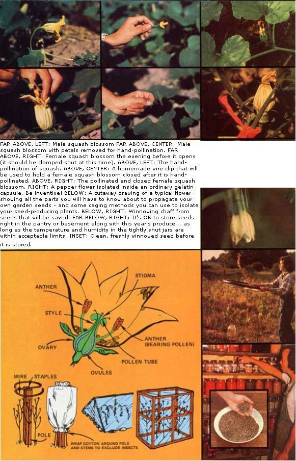
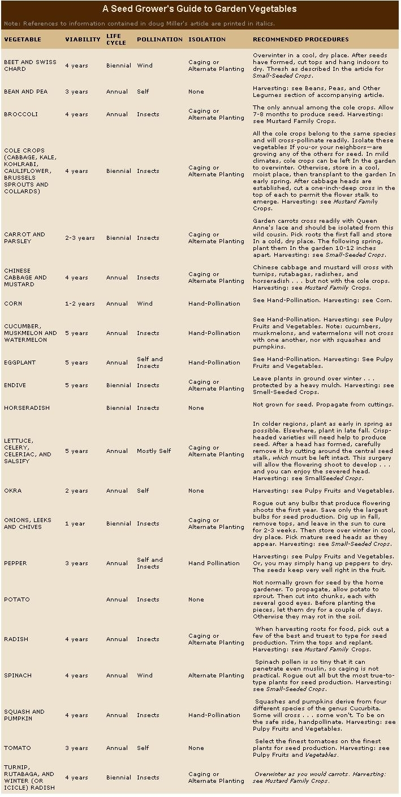

No matter what the experts say, you can grow your own viable, true-to-type vegetable seeds ... year after year! The secret? A few professional techniques-such as hand pollination, caging, alternate planting, and roguing-that you can practice in your own back yard.
Several years ago-when we were first building up our homestead here in northern Michigan-I suddenly realized that no matter how much food we coaxed out of our soil each year . . . we would not be truly food self-sufficient as long as we relied on outside sources for seed. There we were, feeling a little smug because we seldom had to visit the local grocery store . . . yet at the same time we depended entirely on a large, remote seed-growing industry for our "daily bread". Clearly, our whole concept of selfsufficiency had a flaw in its very foundation.
At first, I was sure that saving seeds couldn't be too difficult. After all-we reasoned-if the pioneers had done it, we could too! In practice-of course-the whole idea turned out to be a little trickier than I had anticipated. Those first vegetables grown from our own garden seed were-to say the least-a trifle unusual . . . if not exactly inedible.
The peas and beans seemed normal enough, but the radishes had rather strange shapes and 1 couldn't really tell which cucumbers to pickle and which to slice. As for the squash and pumpkins: Let's just say that the youngsters carved some mighty weird jack-o'-lanterns that year, while their parents canned vegetables of dubious genealogy that were arbitrarily labeled "squash".
I sought help from my neighbors-all of them old, experienced farmers-and every one I asked tried to talk me out of my new enterprise. "Ya can't do it," they said. "Yer seed'll `run out'." Meaning, of course, that my vegetables would lose their unique varietal characteristics through crosspollination with other, closely related plants.
Now, I know that most garden books and horticultural experts will tell you exactly the same thing. But I say that you can consistently produce viable, true-to-type vegetable seeds . . . IF you know a few tricks of the trade and IF you're willing to invest the time and labor that serious propagation requires.
The secret of success lies in adapting such techniques as hand pollination, 'caging, alternate planting, and roguing-methods used by commercial seed growers to keep their strains pure and vigorous-to the particular requirements of your garden. I know it's possible because-after years of experimentation, and a good bit of advice from plant-breeding experts-I have the seeds and crops to prove it!
My squashes now look like squashes. My pickling cucumbers no longer cross with my slicing types. I even know how to obtain good seed from the tricky biennials (such as carrots, beets, and cabbage). While it is true that the children kinda miss those weirdo jack-o'-lanterns they used to carve . . .I now feel a special satisfaction knowing that my garden can renew itself each year. Our pantry shelves are currently packed with jars of potential new crops, and the cycle of growth feels continuous and complete.
Sounds good, right? Well it is! But don't throw away your seed catalogs just yet (not for a few years anyway) . . . because consistent success with the home propagation of all your crops won't come overnight. For while some vegetables-beans and tomatoes, for example-are easy to grow for seed, others require special care and may defy your initial efforts. Meanwhile, you'll still need those of "tried and true" sources of seed to keep the garden going.
The first thing you must know about each vegetable you wish to grow for seed is whether it is an annual, biennial, or perennial . . . because each type requires slightly different treatment. (Since perennial vegetables-such as asparagus, artichokes, and rhubarb-are long-lived, produce seed for many years running, and-in any case-are best propagated from cuttings . . . they will not be discussed any further in this article.)
Annuals include such popular garden vegetables as peas, beans, tomatoes, lettuce, melons, squash, corn, and spinach. They are the easiest types of plants to grow for seed because they mature in a single year. You just sow one generation of seeds in the spring .. . and harvest the next in the fall.
Biennial vegetables-such as carrots, onions, celery, cabbage, turnips, and beets-are a little tougher. They take two years to produce seed and therefore (in many parts of North America) must somehow be "stored over" during the winter. Root cellars, cool basements and pantries, and even covered pits dug deep in the ground will all do this job nicely for most crops. Then, after the danger of heavy spring frosts has passed, you can replant the vegetables in your garden. If you live in a section of the country where winters are mild (coastal California, for example), you can just leave them in the soil to begin with . . . protected perhaps during occasional cold spells by heavy mulches and/or makeshift shelters. Most biennials will produce seed in the summer of their second year.
The best time to begin planning next year's harvest is this winter . . . when you're still hungrily poring over your favorite mailorder catalogs or wandering through local garden centers dreaming of spring. For the seeds you select now will greatly influence the quality of those you pick later.
Since the main object in growing your own seed is to perpetuate vegetable strains especially suited to your particular garden, you should avoid unfamiliar varieties that have not been tested in your region. Stick with the types that have already proven their worth in your neighbors' yards . . . or better still, in your own!
Also avoid the newer hybrid vegetable strains in favor of standard, "open-pollinated" varieties ... which still dominate the market. For, though the hybrids have many virtues, they tend-like that old barnyard half-breed, the mule-to be sterile. Moreover, the offspring of those that do produce viable seed rarely resemble their "thoroughbred" parents.
Once your vegetables are established-in late spring or early summer-select only the finest specimens for seed production . . . the ones that are most robust, have the shiniest leaves, are least bothered by insects, and seem truest to type. And don't judge merely by a single criterion-giant fruit, for example-but consider each plant's overall vitality. Remember, sickly plants yield fewer viable seeds . . . and tend to produce sickly offspring to boot!
Next, after you've chosen your "parent" stock, clearly mark each plant in some fashion (with ribbons or stakes or what have you) to set them apart from your "ordinary" eatin' vegetables.
If you're anything like me, you'll thoroughly enjoy selecting plants for such desirable traits as earliness, sweetness, hardiness, shape, color, productivity, and resistance to drought or pests. In effect, you will be developing your own strains . . . and chances are they'll be better adapted to the environmental conditions in your own particular garden than any commercial variety you can buy. This is because most of the large seed growers operate in California, and there's just no way they can breed plants that are specifically suited to the soil and climate here in northern Michigan . . . or any other part of the country except California.
The chief problem you-the home seed grower-will face in your propagation activities is maintaining the purity and vigor of your favorite varieties of fruits and vegetables from one generation to the next . . . and that largely boils down to preventing cross-pollination among closely related plants. For example, the various cole cropscabbage, kale, collards, broccoli, and the likeall derive from a common ancestor and therefore cross readily. So do beets and Swiss chard . . . turnips, rutabagas, and radishes . . . and different strains of cucumbers or squash or melons. Some vegetables even accept pollen from certain wild cousins. Carrots, for example, will cross with Queen Anne's lace (the common wild carrot imported into this country from Europe).
The offspring of crosses usually exhibit some-but not all-of the characteristics of each parent, depending on the roll of the genetic dice. But, as a general rule, they are decidedly inferior with respect to one or more traits that we value in garden vegetables (but which nature doesn't give a hoot about). Further uncontrolled crosses may eventually dilute the family virtues to such an extent that the strain becomes useless for cultivation. Then-as my neighbors would say-"Yer seed has run out!" So it's back to the catalogs and garden centers for a new supply.
The easiest way for the beginning seed grower to avoid this problem is to concentrate on self-pollinating vegetables-such as lettuce, okra, beans, peas, and tomatoes-which have flowers designed in ways that discourage or prohibit fertilization by other plants. (Peas, for example, have already pollinated themselves by the time the flowers open!) Still, to restrict your efforts to just these plants is to miss out on much of the fun, challenge, and satisfaction of growing your own seeds. (Believe me, you'll feel triumphant when-at last! you finally managelike an eagle-eyed chaperon-to discourage the rampant promiscuity of your crosspollinating vegetables.)
Commercial growers maintain the genetic purity of their strains of seeds in several ways. One of the most common is to plant mutually fertile crops well apart from one another. The precise distance depends mainly on whether the plants are pollinated primarily by insects or the wind. Insectpollinated vegetables require a minimum separation of 1/4 mile. Wind-pollinated types should be at least 1 to 1-1/2 miles apart.
Few backyard gardeners and small farmers can isolate their crops in this fashion, of course . . . so they must resort to other professional techniques.
The most practical of those "other" methods for use on a small scale are [1] alternate planting, [2] hand pollinating, [3] caging, and [4] roguing.
You can isolate closely related vegetables in time rather than space! In other words, grow only one variety of radishes (or whatever) for seed in a single season, another variety during the next growing season, etc. By alternating crops in this way, you can propagate several of your favorite strains of any individual crop with little danger of unwanted crosses originating in your garden.
Unfortunately, though, there's nothing to stop the folks down the street from growing a variety of, say, cabbage or pumpkin that is different from yours (and which insects or the wind will cross-pollinate with your strain) . . . so alternate planting can be risky in cities and suburbs. Even so, it should work most of the time because people usually harvest vegetables for the table long before their plants go to seed.
This foolproof method of obtaining pure, true-to-type seed is ideal for cucumbers, muskmelons, watermelons, squash, pumpkins, peppers, eggplant, and corn . . . all of which have large, easy-to-handle flowers and produce numerous seeds per blossom. (You can also hand-pollinate tomatoes, but since they're almost entirely self-fertilizing, this precaution is seldom necessary.)
The cucurbits (cucumbers, melons, squash, and pumpkins) are insect-pollinated annuals. They have separate male (pollen-producing) and female (ovule-producing) blossoms. You can easily distinguish the two because the female flower includes a swollen ovary just below the petals. The male lacks this organ . . . which will eventually develop into the fruit.
To hand-pollinate, just follow these easy steps:
[1] On the day before a female flower is due to open, fasten it shut with a metal clip or rubber band (or whatever works). This precaution will keep unwanted pollen from fertilizing the blossom.
[2] On the following day, pick a male flower from a different plant . . . and expose the pollen-producing anthers by removing the petals.
[3] Then, open the female flower and gently rub the anthers across the stigma (the enlarged pollen receptacle at the tip of the style, or central stalk within the blossom).
[4] Finally, clip the female flower shut again to prevent further pollination. Be sure to mark the blossom in some fashion so that you can later distinguish the fruit it produces from that borne by blossoms pollinated by insects.
You can hand-pollinate peppers and eggplant in much the same way . . . except that their flowers are "perfect" . . . that is, they contain both male and female parts. So you just have to pick any flower from one plant and rub it against any other from a different plant. The receptive blossom, of course, should be clipped both before and after this operation. (Actually, peppers and eggplant-like their cousin, the tomato-are largely self-pollinating, but bees visit these fruits so much that a good deal of crossing occurs anyway.)
Like the cucurbits, corn plants have separate male flowers (tassels) and female flowers (the ears). Pollen formed on the tassels is carried by the wind to the silk (stigmas) produced by the ears. To handpollinate, place white paper bags over selected ears before the silk appears. Secure the bottom of each sack with a rubber band or length of twine. When pollen shakes away from the tassels easily, cut one off and rub it against the silk of ears growing on different plants. Then replace the bags until the ears mature.
The flowers of most garden vegetables are just too small and/or they produce too few seeds to make hand-pollination practical. In such cases, caging -which is just what the name implies-offers a sure-fire way to achieve the isolation and control you're after. (Just be sure to include at least five plants of the same type in each cage to encourage vigorous cross-fertilization.) As shown in the illustration which accompanies this article, you can easily construct cages from materials found around the house . . . but different types of screening must be used, depending on whether the enclosed plants are pollinated by the wind or insects.
Cages for wind-pollinated plants should be covered with muslin or cheesecloth to exclude the extremely fine pollens characteristic of these types. (Spinach pollen is so microscopic, however, that you might as well forget caging altogether and just take your chances that no one nearby is growing another variety for seed.) In order to make sure the pollen is well distributed within your cages, give the enclosures and/or the plants inside a few shakes every two or three days.
When caging vegetables that are pollinated by insects, your mesh need only be fine enough to keep the critters out. Window screen is excellent for this purpose. Remember, though-in order to ensure pollination-it will be necessary to place insects inside the enclosures. Honeybees are ideal for this purpose, of course, but for obvious reasons they're hard to handle. And if kept away from their hive, they soon die. Flies, however, offer a good alternative and you can breed your own by setting out a pan of raw meat or innards. The flies will lay their eggs in the rotting flesh . . . and when maggots appear, you can just place the container of infested material inside your cages. The maggots will soon metamorphose into adult insects, which will then pollinate the fruits or vegetables.
During the growing season, you should regularly examine your seed crops and cull any plants that seem sickly, deformed, or not true to type. This process-known as "roguing"-strengthens the strains you're raising by eliminating undesirable traits from the pool of genes that you're working with. You should rogue biennial root vegetables again a second time just prior to winter storage.
As in just about every other aspect of seed production, harvesting procedures vary from one vegetable to the next. Certain generalizations, however, do apply to five basic groups:
[1] BEANS, PEAS, AND OTHER LEGUMES: Let the finest pods on the most vigorous plants remain on the vine until they're completely dry. At that time, they should be brown or yellow-depending on the variety-and the seeds should rattle. Then just pick and shell. Or, you may thresh the pods by beating them with a stiff leather belt or other device. Be careful not to hit them too hard, however, or you may shatter the seeds inside.
The easiest way to separate shelled beans and peas from unwanted debris is to use a lawn rake. Or you can screen the vegetation: Just make sure the holes in the mesh are small enough to hold pods and stems but large enough to allow the seeds to pass through to a ground cloth or receptacle that you have waiting below. You can make a simple screen by attaching wire mesh to a barrel hoop or similar device.
[2] PULPY FRUITS AND VEGETABLES (tomatoes, squash, cucumbers, melons, peppers, eggplant, and okra):
Pick fruit when it is dead ripe. Scoop out the seed-bearing pulp and place it in a container with enough water to cover. Next, allow the mixture to sit-and ferment-at room temperature for 5-7 days. By then, the seeds should have separated from the pulp and fallen to the bottom of the container. After rinsing the seeds until they're clean, spread them out in a cool place to dry.
[3] MUSTARD-FAMILY CROPS (cabbage, kale, collards, cauliflower, kohlrabi, broccoli, brussels sprouts, mustard, radishes, rutabagas, and turnips): Cut the seed stalks before their pods have completely dried out. Then, hang them indoors for 2-3 weeks to finish curing. When the stalks are as dry as they'll get, thresh the pods as you would beans and peas. Then rake or screen to remove plant debris. Finally, winnow the seeds to remove any chaff that is still mixed in with them. This is best done on a slightly breezy day. Just drop the seeds from a height of five or six feet onto a ground cloth or into a large-bottomed container. The wind will carry away the light chaff, but not the heavier seeds.
[4] SMALL-SEEDED CROPS (lettuce, endive, celery, carrots, onions, spinach, and salsify): Pick the seed stalks when they have matured, place the stalks-one or a few at a time-inside a paper bag, shake off the seeds, and then winnow them as described above.
[5] CORN (sweet corn, field corn, popcorn): The ears should remain on the stalks until the kernels are hard and dry . . . about 3-5 weeks after the eating stage. Then, bring them inside before the onset of frost or wet weather in the fall. Shell the ears only when the kernels have completely dried.
After harvesting, cleaning, and drying your seeds, store them in airtight containers such as canning jars or coffee cans with plastic lids. Label each container clearly, indicating the variety of vegetable and the date of harvest. Then place your jars or cans of seed in a cool, dry place. A good rule of thumb for determining if storage conditions are appropriate is that the sum of temperature (in degrees Fahrenheit) and relative humidity (expressed as a percentage) should not exceed 100. For example, seed stored at 45°F should not be exposed to a relative humidity that is greater than 55%.
If seeds are properly stored, they will remain viable (will grow) for anywhere from one to five years . . . depending on the type of vegetable. If you have doubts about whether or not some of your seeds will still sprout, check 'em out before you plant them in the garden. Just roll up a few of each of the batches
of seeds that you're unsure of between layers of damp cloth or paper towels. Then stand this simple sprouter on end in a jar with a little water in the bottom. In a few days, examine the seeds to determine what percentage have germinated. If-for exampleonly 50% have sent out shoots, no problem: Just sow twice as many per row as you would had they all been viable. (If the percentage of germination is too small, of course, you will have to discard the seeds and buy yourself a fresh start in that particular plant.)
I am always surprised by how many seeds you can harvest . . . even when operating on a small scale! As I scoop hundreds of seeds out of one tomato-or thousands from a single carrot or celery plant-I wonder why a packet of just a couple of dozen often costs 50d or more.
Even on the limited scale on which I propagate my own plants, I always wind up with much more seed than I can use. Some of this surplus brings in a little extra money but, most often, I prefer to trade the seeds I raise for other goods or services that I can use here on the homestead. In addition, my unusual crop makes excellent gifts for friends and neighbors.
Now, while I haven't really investigated the home-business possibilities of seed production (has anyone?), I believe that local farmers and gardeners in most areas of the United States and Canada would jump at the chance to obtain inexpensive, viable, true-to-type seeds produced by the varieties of vegetables that do the very best right in their own region.
Anyway, given the precarious state of our paper economy, plain old common sense suggests that the basic necessities of life should be available at the local level. And since food begins with seeds . . . a small, reliable "backyard" source should be a valuable-perhaps an essential-asset to any community.
EDITORS NOTE: For more information on the growing of garden seed, be sure to read Royce A. Carl's "Seed Storage", pages 70-73 of MOTHER NO. 31, Clarice L. Moon's "How to Save Your Own Garden Seed" and Floyd and Linda Moore's "HomeGrown Garden Seeds", on pages 14-17 of MOTHER NO. 34, and Richard P . King's "Save Your Own Garden-Grown Vegetable Seed", on pages 80 and 81 of MOTHER NO. 47. Finally, we recommend Doug Miller's own excellent manual, Vegetable and Herb Seed Growing for the Gardener and Small Farmer . . . which is the only booklet of its kind that we've been able to find. To obtain a copy of this 48-page guide, send $3.25 to Bullkill Creek Publishing, Hersey, Michigan 49639.
|
 |
 |
|